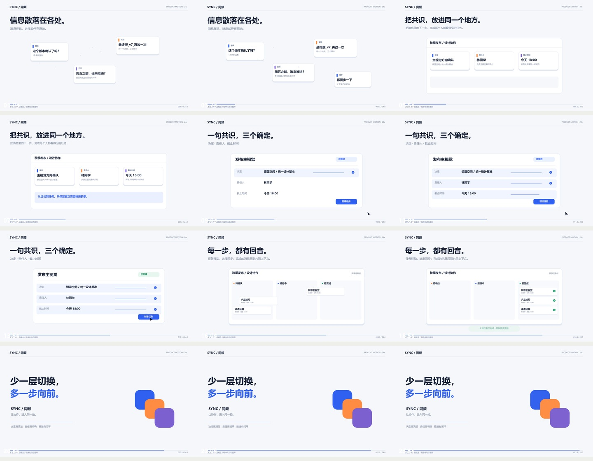
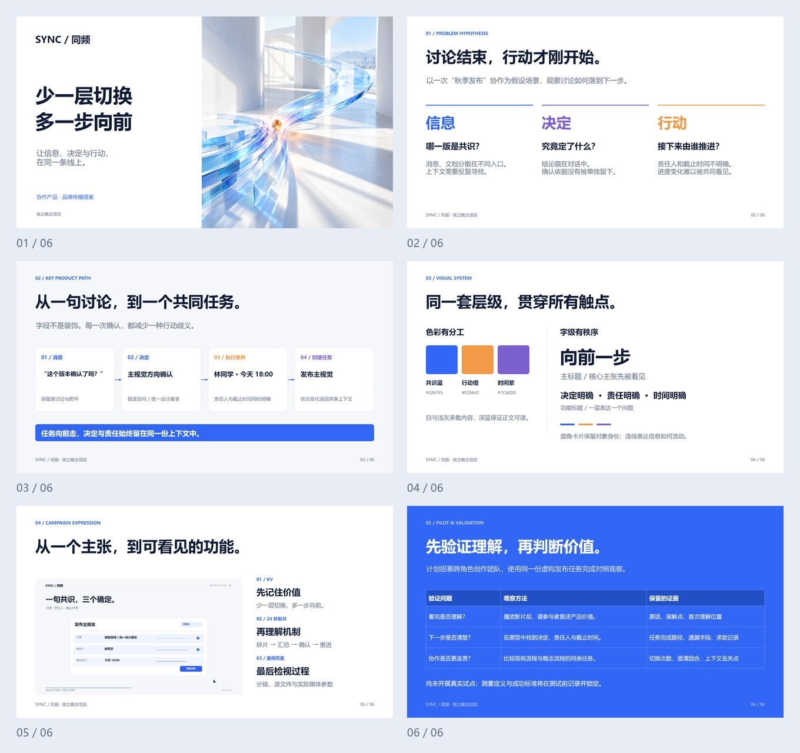

少一层切换，
多一步向前。
用 24 秒讲清楚一个协作产品的价值：把分散的讨论，变成有决定、有责任人、有截止时间的共同任务。
消息很多，下一步却不清楚。
需要跨角色沟通的小型创作团队。场景是一次秋季发布协作；任务、人物和产品均为虚构示例。
让信息的移动成为功能解释：卡片先从各处聚拢，再形成结构化任务；创建动作带来状态反馈，任务推进回到共享上下文。
每个镜头，都承担一个明确任务。
| 时间 | 画面与动作 | 叙事目的 |
|---|---|---|
| 00–04s | 信息碎片聊天、文档、日历与待办分别进入画面，浮动位置形成分散感。 | 建立问题：讨论存在，但执行条件没有汇总。 |
| 04–08s | 共识归一三个信息对象重新排列，保留颜色身份并组成共享任务空间。 | 表现信息如何变为结构，而不只展示漂亮界面。 |
| 08–15s | 三个确定决定、责任人与截止时间逐项确认；指针点击后状态从待推进变为已创建。 | 用可见动作和及时反馈解释功能因果。 |
| 15–20s | 推进闭环三张任务卡从待确认经过进行中到已完成，并返回团队同步反馈。 | 说明状态变化为团队创造的共同认知。 |
| 20–24s | 价值收束三种颜色汇成同一视觉标记，回到“少切换、多向前”的主张。 | 让品牌语言来自前面的功能演示。 |

运动与声音，服务于同一件事。
动画由时间函数逐帧计算，位置、尺寸、明暗、路径和状态各自拥有明确的起止时间。缓动采用三次曲线；图形变换保留对象身份，使观众能追踪每一步变化。
配乐由正弦谐波、包络与简洁和弦组合成；关键动作配以短音提示。未使用第三方歌曲、采样音轨或录音。无配音，主要信息可通过画面与中文说明独立理解。
能播放，也能检查。
交付包括 MP4、封面、画面说明字幕、分镜表、关键帧与可重渲染的 Python 源文件。画面由 Pillow 绘制，音频由 NumPy 合成，再经 FFmpeg 编码。
视频：H.264 / 1920 × 1080 / 24 fps
时长：24.000 秒 / 576 帧
音频：AAC / 48 kHz / 双声道
验证：FFprobe 元数据核验 + 完整解码通过
成片检查与下一步。
- 保持字号、列宽与对齐基线一致；大标题在正常播放速度下完整可读。
- 创建按钮的点击发生在字段确认之后，避免把状态变化表现成无因跳变。
- 三张任务卡始终保持对象身份，移动本身承担推进的含义。
- 结束画面保留约四秒阅读时间；成片使用合成配乐，无配音依赖。
若继续迭代，可与同一产品的交互原型联动，补充撤销创建、任务阻塞、责任人缺失等异常状态，并做真实观众理解测试。
同一套表达，延伸为一份传播提案。
六页 16:9 提案从协作断点、关键产品路径、视觉系统讲到传播触点与试点计划。标题、流程图、配色标记与验证表均为原生可编辑对象；封面使用本项目的概念 KV。没有虚构的用户反馈或业务成绩。

项目边界与制作说明。
这是产品概念动效，不是已上线产品的录屏或可交互原型。它证明功能价值表达与动效执行能力，不提供用户访谈、效率提升或真实转化数据。
本次交付采用 AI 辅助创意梳理与程序实现；片内图形、UI 与合成声音均为本案例制作。SYNC 为虚构协作产品；案例不代表飞书、字节跳动或任何品牌的官方委托，不包含真实上线成绩。